Bản ảnh nghiệm thu ngày 02/11/2026 (phần user bổ sung ngày 03/11 xem thư mục user-final). Ảnh chụp ứng dụng Next.js chạy cục bộ, cùng dữ liệu giả lập và kích thước màn hình trước–sau. Đây là giao diện đã render, không phải mockup thiết kế.
10 câu hỏi. Giảm các lớp khung và metadata; số lượng, chi phí và số dư nằm cạnh nút gửi. Giữ một hành động Tạo và gửi ngay.
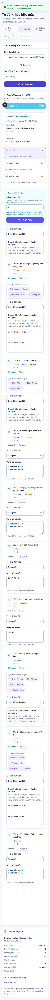
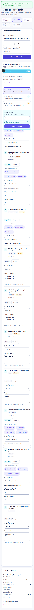
10 câu hỏi. Giảm các lớp khung và metadata; số lượng, chi phí và số dư nằm cạnh nút gửi. Giữ một hành động Tạo và gửi ngay.
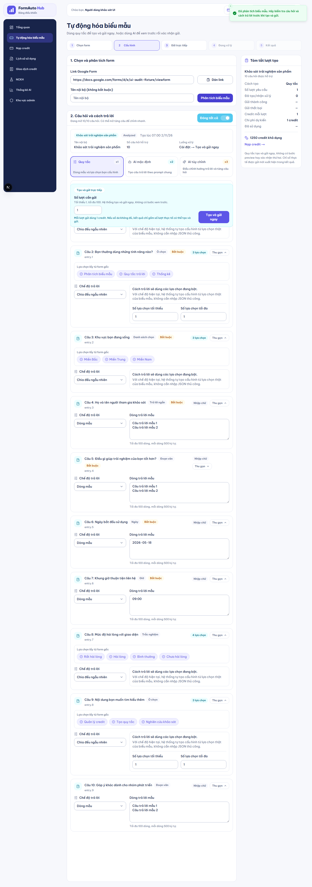
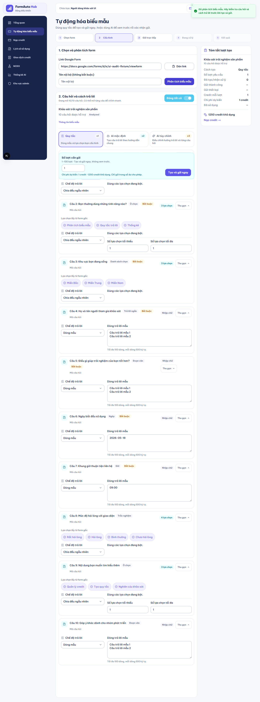
10 câu hỏi, AI mặc định. Hướng dẫn và chi phí gọn hơn; vẫn giữ bản xem trước đã lưu và bước xác nhận gửi.
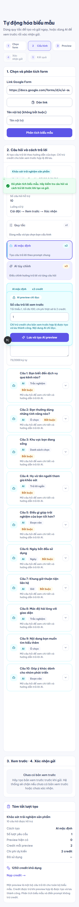
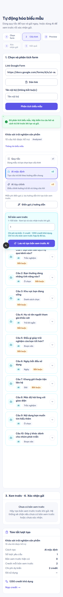
10 câu hỏi, AI mặc định. Hướng dẫn và chi phí gọn hơn; vẫn giữ bản xem trước đã lưu và bước xác nhận gửi.
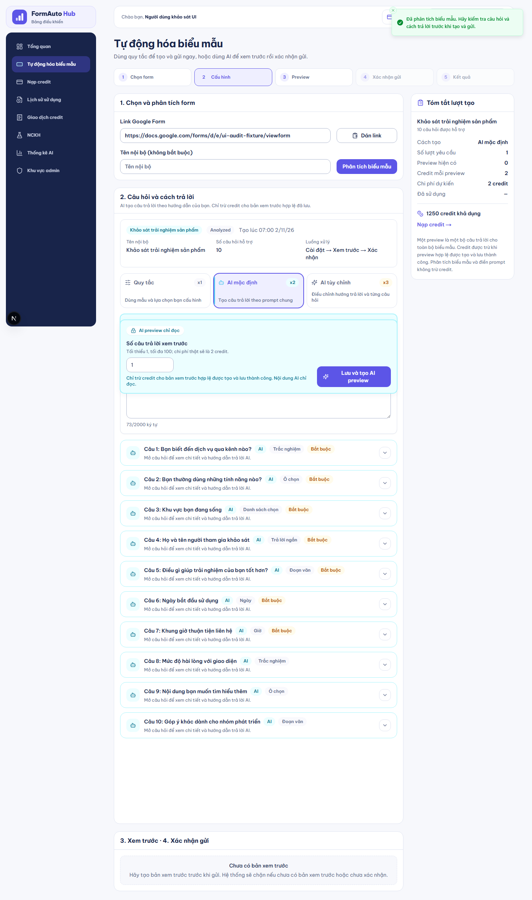
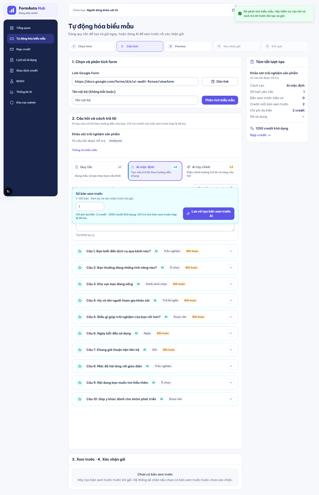
Số dư được ưu tiên; các chỉ số phụ đặt cạnh nhau trên điện thoại, bớt khoảng trống trước lịch sử.
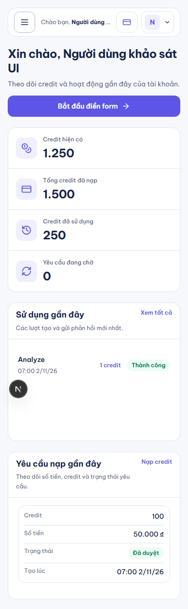
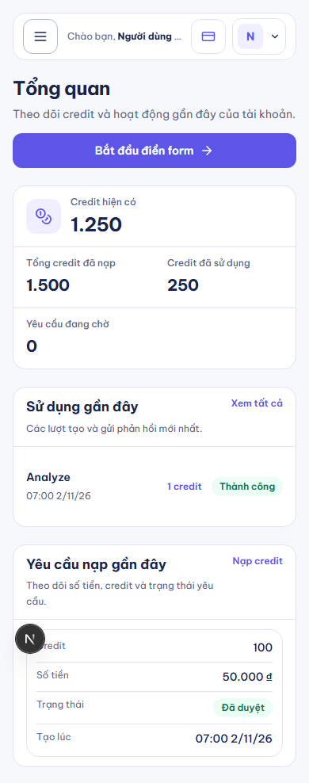
Số dư được ưu tiên; các chỉ số phụ đặt cạnh nhau trên điện thoại, bớt khoảng trống trước lịch sử.
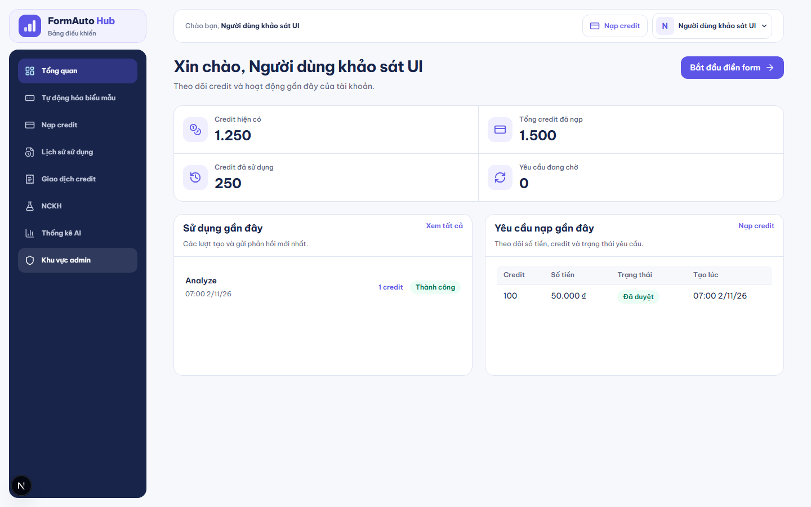
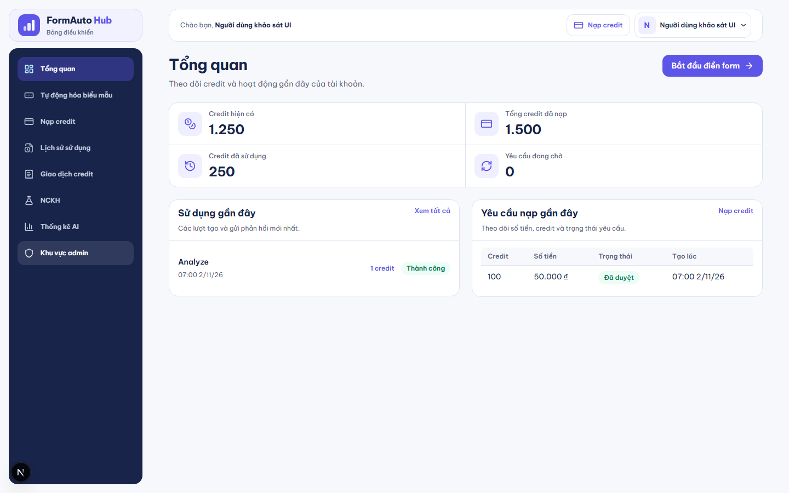
Giảm hướng dẫn lặp và khoảng cách gói. Giá, credit, trạng thái và thông tin thanh toán vẫn có đủ.
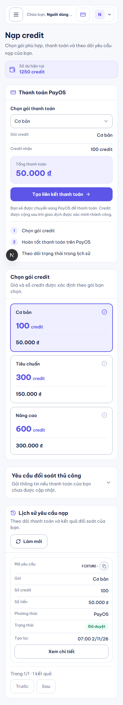
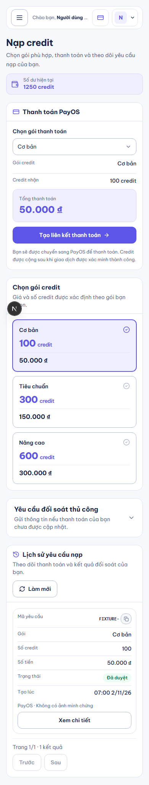
Giảm hướng dẫn lặp và khoảng cách gói. Giá, credit, trạng thái và thông tin thanh toán vẫn có đủ.
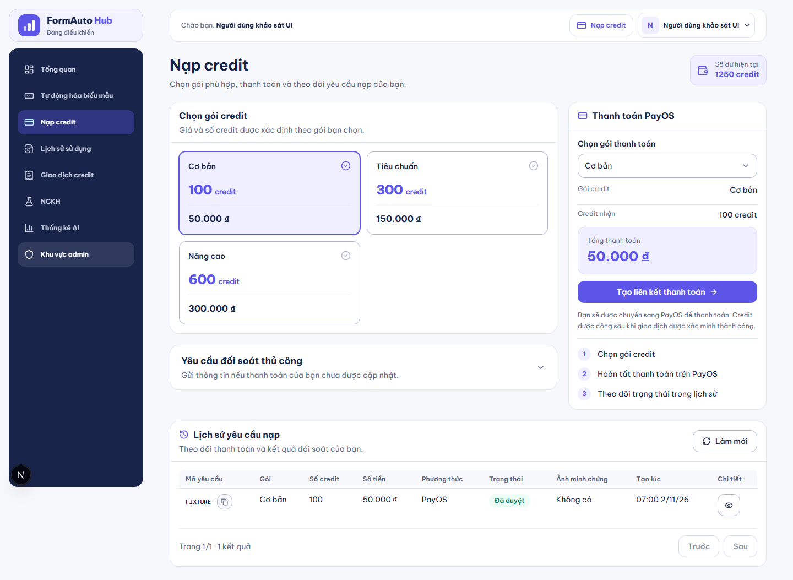
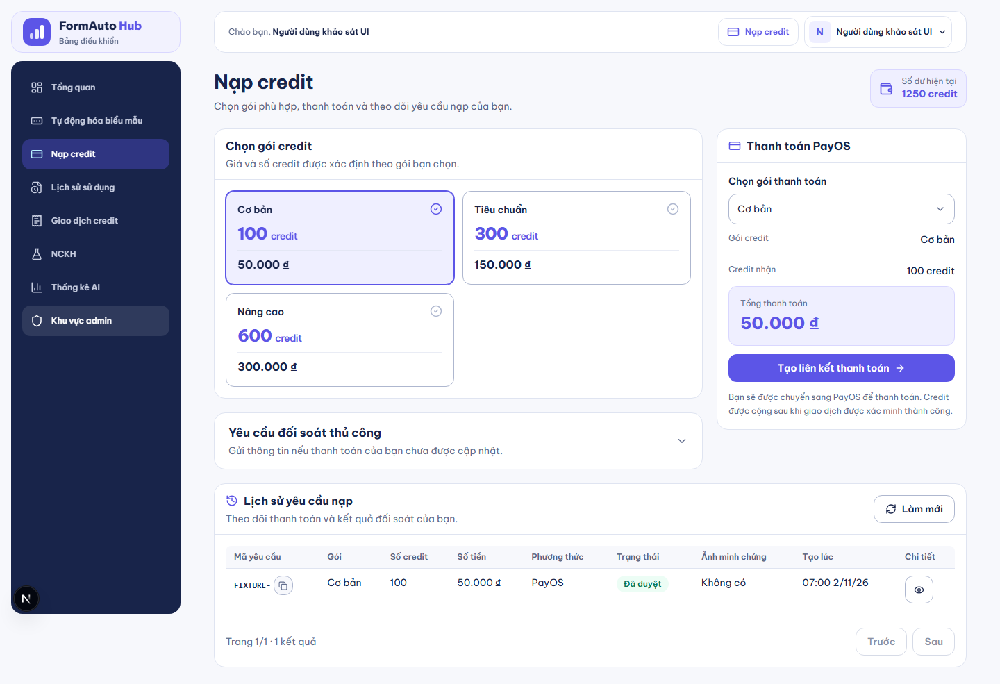
Bỏ biểu đồ, bộ lọc và nút xuất chưa hoạt động; giữ các số liệu đang có.
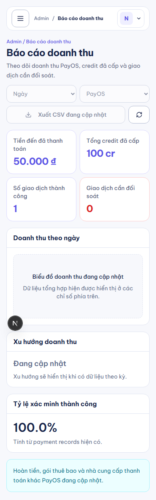
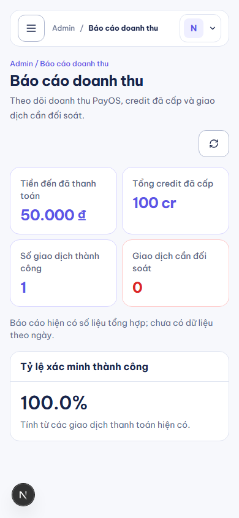
Bỏ biểu đồ, bộ lọc và nút xuất chưa hoạt động; giữ các số liệu đang có.
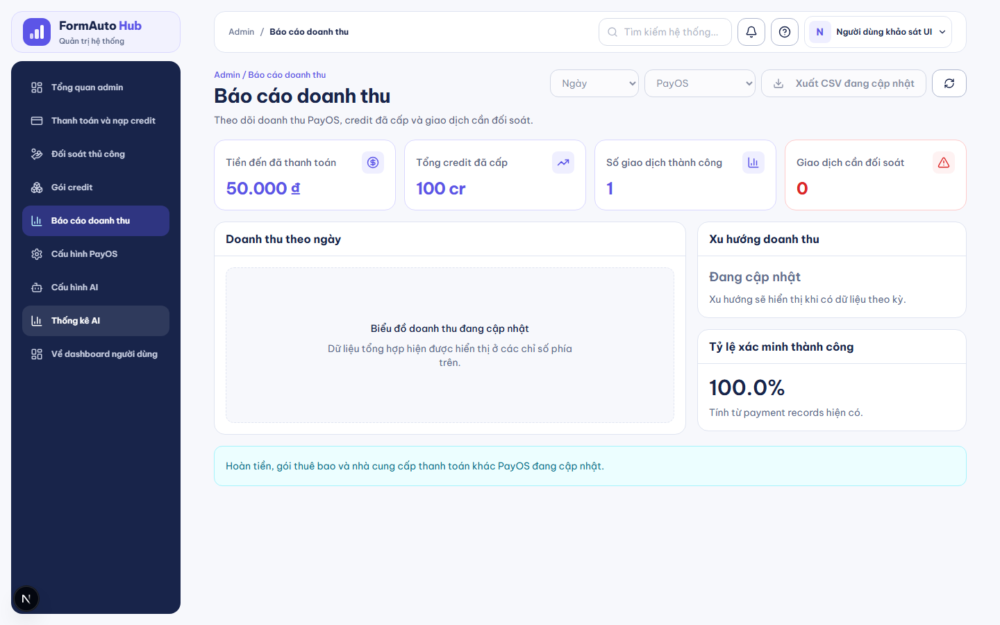
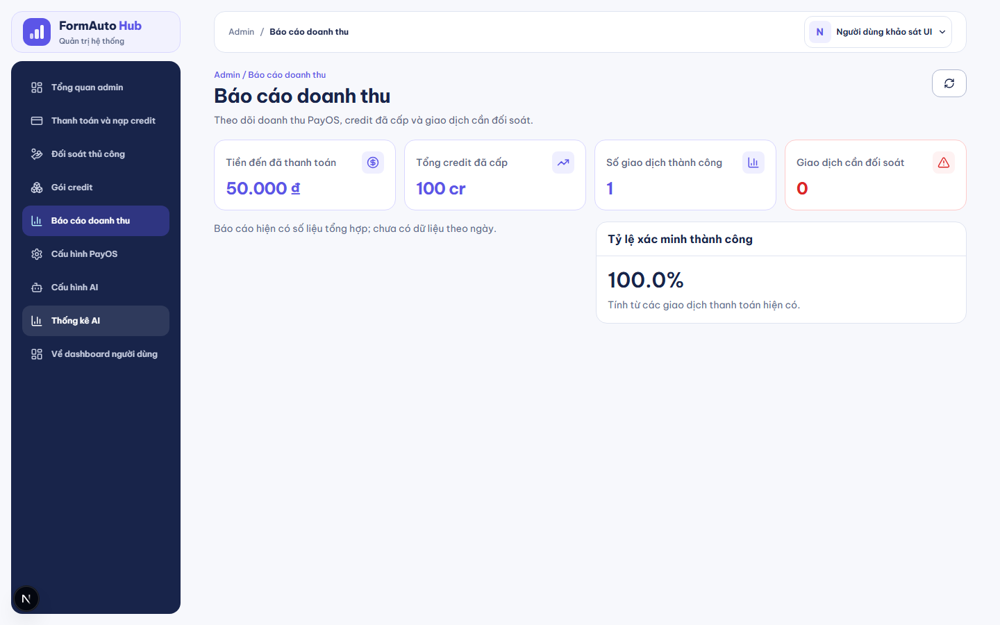
Cuộn riêng từng ảnh để xem phần dưới, hoặc chọn “Phóng to ảnh”. Ảnh máy tính được thu nhỏ để đặt cạnh nhau; phóng to để đọc rõ.
Số đo là chiều cao tài liệu, không phải thời gian thao tác. Không phải mọi trang đều ngắn hơn. Toast và thanh sticky có thể nằm đè trong ảnh toàn trang; vị trí cuộn/thời điểm ổn định chưa chuẩn hóa hoàn toàn. Chưa kiểm thiết bị thật hoặc provider/DB thật. AI đã lưu/kết quả chỉ có ảnh sau nên không đưa vào so sánh trước–sau.